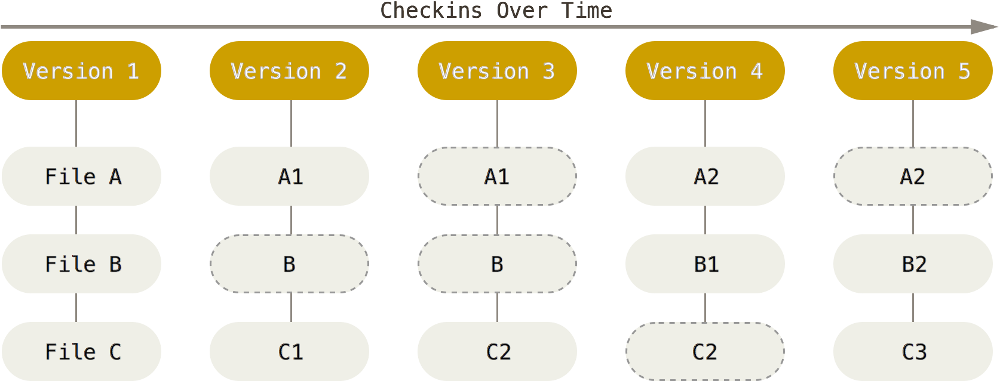
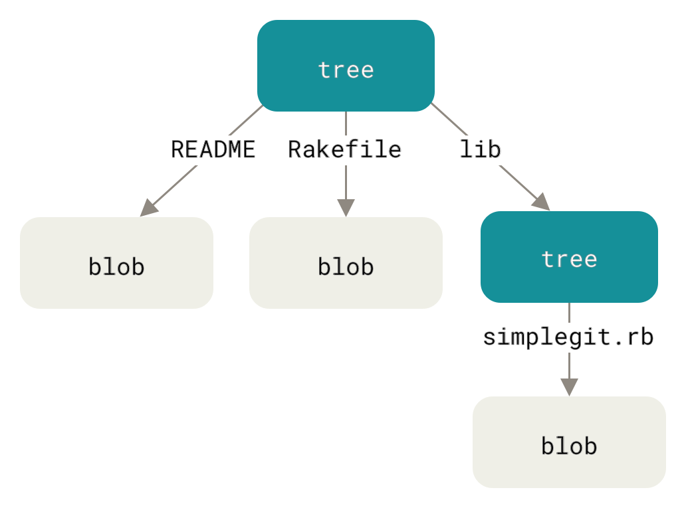
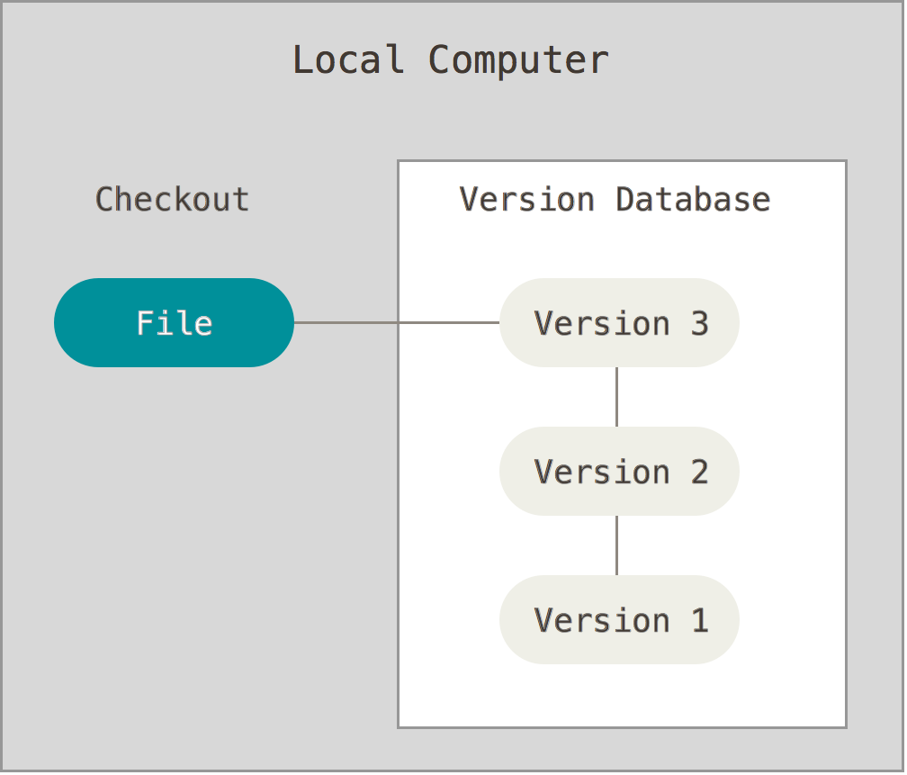
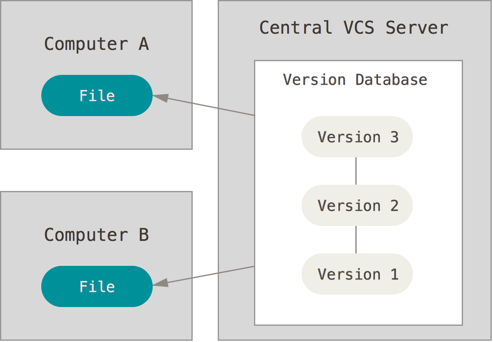
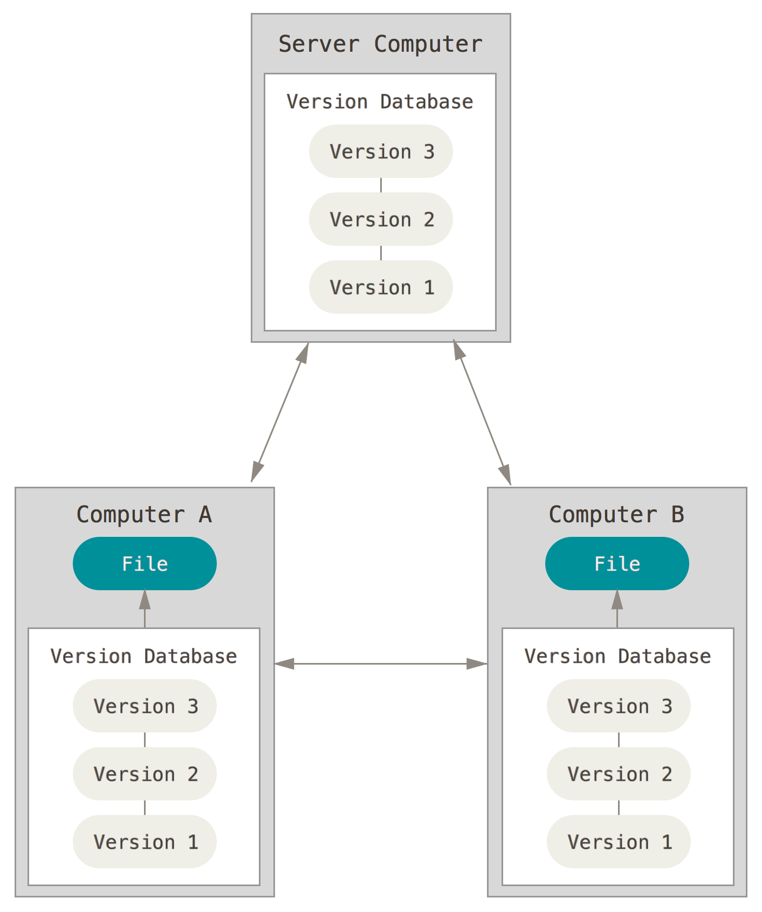
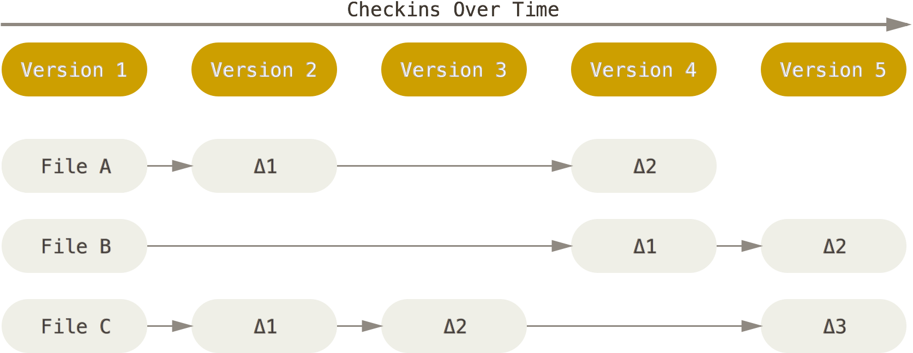

Learn the basics of Git, one of the most popular distributed version
control systems. This is a condensed version of the first chapters of the Git
Book, which you should read if you want more detailed information on
the subject.
There are a lot of different ways to use Git: the original command line
tools and various GUIs of varying capabilities. But the command line is
the only place you can run all Git commands with all their options.
If you know how to run the command line version, you can easily figure out how
to use the GUI version, while the opposite is not necessarily true. So the
command line is what we will use.
How Git stores your project
Git stores your project as a series of snapshots. Each time you commit, it
records what all your files look like at that moment, not just the changes
you made.

A snapshot is made of two kinds of objects:
A blob is the content of one file.
A tree is the listing of one directory: the name of each file in it, with
the blob holding its content, and the name of each subdirectory, with the tree
listing it in turn.
For example, here are the trees and blobs of a project with two files, README
and Rakefile, and a lib directory containing one more file,
simplegit.rb:

A commit points to the tree of your project’s root directory, which is how
it holds the whole project. It also records its author, its date, a message, and
its parent: the commit that came before it. That chain of parents is your
project’s history.
Every object, whether commit, tree or blob, is named by a hash of its
content: a long string of letters and digits, computed by a cryptographic hash
function (SHA-1). The same content always gives
the same hash, and any change to it gives a different one. This has three
consequences:
A file that has not changed is not stored again. Its content still has the
same hash, so the new tree simply points to the blob that already exists. A
snapshot of the whole project only costs the files that changed.
A commit cannot be changed. Changing anything in it, even a single letter
of its message, gives a different hash, and therefore a different commit.
Git notices when data is corrupted. If stored content no longer matches
its hash, Git knows it has been damaged.
It is sometimes said that Git is just a content-addressable file system: it
mostly just stores objects, named by the hash of their content. If you are
curious, git cat-file -p shows the content of any object. Here is a commit:
This section explains the commands you will use every day, what they do, and the
options you will need most often. You can practise all of them in Hello
Git.
A few words come back throughout:
A repository is your project together with its whole history. Git keeps
that history in a hidden .git directory at the root of the project, the
Git directory.
A commit is a snapshot of your whole
project at a particular moment in time, also often called a version.
Think of it as a save point.
The working directory (or working tree) is the files you see and
edit: one version of the project, taken out of the repository for you to work
on.
The staging area (or index) is where you prepare the next commit: the
changes you have put there are the ones the next commit will save.
A branch is a named line of work. Technically, it is only a label that
points to a commit, and moves forward each time you commit on it.
HEAD is Git’s “you are here” marker: it says which branch you are
currently on.
git config: set up Git
git config reads and changes Git’s settings. You need it mostly once, on each
new computer, to tell Git who you are. Every commit records the name and e-mail
address of its author, and they are part of the commit forever: set them before
your first commit.
$>gitconfig--globaluser.name"John Doe"
$>gitconfig--globaluser.emailjohn.doe@example.com
With --global, a setting applies to all your repositories on this computer,
and is saved in the ~/.gitconfig file in your home directory. Without it, it
applies only to the repository you are in.
To check a setting, give only its name. git config --list shows all of them:
$>gitconfiguser.name
JohnDoe
git init: create a new repository
git init turns the current directory into a new, empty Git repository. It
creates the Git directory (.git), where Git will store the history. Your files
are not touched, and none of them is part of the repository yet: Git only starts
tracking a file when you add it.
Use it once, when you start a new project from scratch. git init my-project
creates the my-project directory and the repository inside it in one go.
Warning
Make sure you are not already inside a repository before running git init.
Git looks for a repository in the current directory and in all its parents, so
running git init in a subdirectory of a project creates a second repository
nested inside the first, which is almost never what you want. Run git status
first: outside of any repository, it fails with fatal: not a git repository,
which is what you want in this case.
Also be careful to never run git init in your home directory, or any other
directory that contains other projects. It would make all of them part of the
same repository, which is almost never what you want.
git clone: get an existing repository
Where git init starts a new, empty history, git clone gets a copy of a
repository that already exists, usually on a server such as GitHub:
This creates a git-calculator directory containing the whole repository
— every commit of its history, not only the latest version — and fills its
working directory with the files of the default branch, ready to work on.
git clone <url> <directory> puts it in a directory with a name of your choice.
The copy remembers where it came from, under the name origin. You will see what
that means when you learn to collaborate with Git.
git status: see where you are
git status tells you which branch you are on, and how your files differ from
the last commit. It sorts your changes into three groups:
Changes to be committed: changes in the staging area, which the next
commit will save.
Changes not staged for commit: files you have modified since the last
commit, but have not added to the staging area. The next commit will not
include these changes.
Untracked files: new files that Git does not track yet.
When everything is committed, it says nothing to commit, working tree clean.
git status changes nothing, so you can run it as often as you like. Read it
after every step: it is how you check that a command did what you expected. It
also suggests the commands you are likely to need next, in parentheses.
git add: prepare the next commit
git add puts a snapshot of a file, as it is right now, into the staging area.
Think of the staging area as a loading dock: you gather there what you want to
ship, and the commit ships everything on the dock at once.
$>gitaddsubtraction.js# one file
$>gitaddsrc# everything in a directory
$>gitadd.# everything in the current directory
Adding a new file also tells Git to start tracking it. Adding a deleted file
stages its deletion.
git add stages the file as it is when you run it. If you modify the file
again afterwards, the new change is not staged: git status then lists the file
both under “Changes to be committed” and under “Changes not staged for commit”,
and you have to add it again to include the new change.
git add . is convenient because it stages everything in the current directory
and its subdirectories in one go, but it adds everything, including files you
might not want in your repository. Check with git status before you commit.
git diff: see exactly what changed
git status tells you which files changed; git diff shows you what
changed in them, line by line. Without options, it shows the changes you have
not staged yet: the differences between your working directory and the
staging area.
Lines starting with - were removed, and lines starting with + were added. A
modified line shows up as both: its old version removed, its new version added.
The other lines are unchanged, and only shown to give you some context.
Once you have staged a change with git add, git diff no longer shows it. Use
the --cached option (or --staged, which is the same) to see the changes that
are staged, the ones the next commit will save:
$>gitdiff# what you changed but have not staged
$>gitdiff--cached# what you have staged, and will commit
Together, the two show you each of the three areas at work. Run
git diff --cached before committing, to check that the commit contains what
you meant, and nothing else.
git diff can also compare any two versions of your project, for example two
branches: git diff main sub. When the output is longer than your terminal, use
the arrow keys to scroll and press q to quit.
git commit: save a snapshot
git commit saves everything in the staging area as a new commit: a
snapshot of your whole project, with your name, the date, and a message
describing the change. The new commit points to the previous one, its
parent: that chain of commits is your project’s history. The current branch
moves forward to point to the new commit.
$>gitcommit-m"Implement subtraction"
[sub7f2a5d0]Implementsubtraction
1filechanged,1insertion(+), 1deletion(-)
The new commit is named by its hash, such as
7f2a5d0…. Git often shows only its first few characters.
The options you will use most:
-m "message" gives the commit message on the command line. Without it, Git
opens your editor for you to write the message.
If that editor is Vim and you do not know how to use it, press Esc, then
type :q! and press Enter: the message stays empty, so Git cancels the
commit. See setting nano as the default editor.
-a stages every modified file before committing, so that you can skip
git add. It only includes files Git already tracks: new files still have to
be added with git add.
To change the last commit after the fact, see undoing
things.
git log: look at the history
git log lists the commits of the current branch, newest first, with their
hash, author, date and message.
$>gitlog
commit7f2a5d0...
Author:JohnDoe<john.doe@example.com>
Date:ThuOct110:12:342026+0200
Implementsubtraction
...
When the history is longer than your terminal, Git shows it one screen at a
time: use the arrow keys to scroll, and press q to quit.
Useful options:
--oneline shows one commit per line, with a short hash.
--graph draws the branches and merges on the left.
--all shows the commits of all branches, not only the current one.
--patch (or -p) shows the changes made by each commit.
--stat lists the files changed by each commit, and --name-status also
says whether each file was added, modified, deleted or renamed.
-n 5 (or -5) shows only the last 5 commits.
--reverse shows the oldest commits first.
To search the history:
--grep <text> only shows the commits whose message contains the text. Add
-i to ignore uppercase and lowercase.
--author <name> only shows the commits of an author.
-S <text> only shows the commits whose changes added or removed the text,
even when their message does not mention it.
-- <file> only shows the commits that changed that file. Add --follow to
keep following the file through its renames.
The options combine: git log --oneline -i --grep fix -- index.html lists the
commits that changed index.html and mention a fix in their message.
git log --oneline --graph --all draws the whole commit graph of the
repository. You can define it as an alias, git graph:
A branch is a separate line of work: you can make commits on it without
affecting the others. Technically, it is only a pointer to a commit, which
is why creating one is instant and costs nothing.
$>gitbranch# list the branches; * marks the current one
$>gitbranchsub# create a branch pointing to the current commit
$>gitbranch-dsub# delete a branch
$>gitbranch-moldnew# rename a branch
Creating a branch does not switch to it: you are still on the same branch
as before. Use git switch for that.
Deleting a branch only deletes the pointer, not the commits. -d refuses to
delete a branch whose commits are not part of the current branch’s history,
because you would then have no easy way to find them again. -D deletes it
anyway (see undoing things).
git switch: move between branches
git switch makes another branch the current one. It does two things:
It moves HEAD to point to that branch.
It rewrites the files in your working directory to match the snapshot of the
commit that branch points to.
In other words, it takes you to another version of your project. Your work on
the branch you leave is not lost: it is safely stored in its commits, and you
can switch back to it at any time.
$>gitswitchmain# switch to an existing branch
$>gitswitch-cfix-add# create a new branch and switch to it
$>gitswitch-# switch back to the previous branch
Switch from a clean state, when git status says there is nothing to commit. If
you have uncommitted changes that switching would overwrite, Git refuses to
switch rather than lose them: commit them first, or discard them.
git checkout is the older command for the same thing, and you will find it
in a lot of documentation: git checkout main switches to main, and
git checkout -b fix-add creates and switches to fix-add. git switch was
added to Git because git checkout does many other things as well.
git merge: bring the work of a branch into another
git merge brings the changes of another branch into the current branch.
To bring fix-add into main, you first switch to main, then merge:
$>gitswitchmain
$>gitmergefix-add
Depending on the history, Git merges in one of two ways:
Fast-forward: if the current branch has not moved since the other branch
was created, the other branch is simply ahead of it. Git only has to move the
current branch forward to the same commit. No new commit is created.
Three-way merge: if both branches have new commits, their histories have
diverged. Git compares the two latest commits with their common ancestor
(the last commit they share), combines the changes made on both sides, and
saves the result as a new merge commit. A merge commit is special in that
it has two parents, one on each branch.
A merge commit needs a message, so Git opens your editor with one it has written
for you. In Vim, press Esc, then type :q! and press Enter to keep Git’s
message and finish the merge. As with git commit, you can instead give the
message on the command line with the -m option, and Git will not open the
editor:
$>gitmerge-m"Merge the subtraction feature"sub
If both branches changed the same lines of the same file, Git cannot choose
between the two versions on its own, and stops with a merge conflict. You
will learn to resolve conflicts when you learn to collaborate with Git. Until
then, git merge --abort cancels a merge and puts everything back as it was
before.
Once a branch is merged, you can delete it with git branch -d: all its commits
are now part of the history of the branch you merged it into.
Undoing things
Once something is committed, Git keeps it, and most mistakes can be fixed. But a
few commands throw work away for good, or rewrite history. Know which
ones they are, and read git status before you run them.
Unstaging a file: git restore --staged
If you have staged a change you do not want in the next commit, take it out of
the staging area:
$>gitrestore--stagedsubtraction.js
This is the opposite of git add, and it is safe: the change stays in the file
in your working directory. It is only no longer staged.
Discarding changes: git restore
If you have modified a file and want to throw the changes away, put the file
back as it was:
$>gitrestoresubtraction.js
This command is destructive. The file goes back to its staged version, or to
its last committed version if nothing is staged. Changes that were never
committed are not stored anywhere else in Git, so they are lost forever.
Changing the last commit: git commit --amend
If you notice a mistake right after committing, such as a typo in the message
or a forgotten file, you can replace the last commit with a corrected one:
$>gitcommit--amend-m"Implement subtraction"# fix the message
$>gitaddforgotten.js
$>gitcommit--amend# add a forgotten file
This command rewrites history. The corrected commit is a new commit, with a
different hash, which replaces the old one on the current branch. That is
harmless as long as the commit exists only on your machine, but do not amend a
commit you have already shared with others: their copy of the history would no
longer match yours.
Deleting an unmerged branch: git branch -D
git branch -d refuses to delete a branch whose commits are not part of the
current branch’s history. git branch -D deletes it anyway.
Warning
Although the commits are not destroyed immediately, no branch leads to them any
more, so for practical purposes they are lost. Only use it on work you
really want to throw away.
Tip
To retrieve a branch you deleted by mistake, use git reflog to find the hash
of its last commit, then create a new branch pointing to it: git branch <name> <hash>. But you can only do that as long as Git has not cleaned up the commit,
which it does automatically after a few weeks.
Git only takes full responsibility for your data when you commit. If you fail
to commit and then do something poorly thought out, you can run into trouble.
Additionally, having periodic checkpoints means that you can understand how
you broke something.
If by taking a quick look at previous commit messages, you can discern what
each commit does and why the change was made, you’re on the right track. But
if your commit messages are confusing or disorganized, then you can help your
future self and your team by improving your commit message practices with help
from this article.
A .gitignore file tells Git which files never to track, such as build
output, dependencies, or files holding secrets, so that git status and
git add . leave them alone.
More ways to undo, and how git reset moves a branch and changes the staging
area and working directory, which is the key to many of Git’s other commands.
The many ways to name a commit besides its hash, such as HEAD~2, main^,
ranges like main..feature, and the reflog, which records where your
branches and HEAD have been and lets you find commits no branch points to.
The other way to integrate the work of a branch: git rebase replays its
commits on top of another branch instead of merging, which keeps the history
linear. Read “The Perils of Rebasing” before you rebase commits you have
already shared.
Clean up your commits before you share them: reword, reorder, squash or split
them with an interactive rebase (git rebase -i). Like
git commit --amend, it
replaces commits with new ones, so do not rewrite commits you have already
shared.
How Git stores snapshots, commits and branches in the .git directory, for
those who want to know how it works under the hood.
Appendix: a short history of version control
Git was not the first version control system. It belongs to the third of three
generations, each of which answered the limits of the one before.
Local version control systems (1980s)
The simplest way to keep old versions of your files is to copy them manually
into other directories. The Revision Control System (RCS),
first released in 1982, automated this process on your own machine.

It is still easy to accidentally edit the wrong files, and hard to
collaborate on different versions with other people.
Centralized version control systems (1990s)
Centralized version control systems are based on a single central server
that keeps all the versioned files. Concurrent Version Systems
(CVS) and Subversion (SVN) are such systems, first
released in 1990 and 2000 respectively.

Administrators have fine-grained control over who can do what. But many
operations need the network, which makes them slow; the server is a
single point of failure; and the history can be lost if it has no
backups.
You could also consider storing your files in a shared Dropbox, Google Drive,
etc. to be a kind of centralized version control system. However, it doesn’t
have as many tools for consulting and manipulating the history of your
project, or to collaborate on source code.
Distributed version control systems (2000+)
Systems such as Git and Mercurial, both first released in
2005, are distributed. Each client fully mirrors the repository: the
whole history, not just the latest snapshot.

Because Git stores all versions of all files locally, most operations are
almost instantaneous and do not need a connection to a server:
Browsing the history
Checking a file’s changes from a month ago
Committing
Basically any collaborative workflow is possible, since the team can organize
itself however it wants (see distributed workflows).
Administrators still control their servers, but not their collaborators’
machines.
Snapshots, not differences
Most earlier systems, such as Subversion, store each file as its first version
followed by the list of changes (or deltas) made to it over time.

Git stores its data as snapshots instead. Every time you commit, it takes a
picture of what all your files look like at that moment and stores a reference
to that snapshot. To be efficient, if a file has not changed, Git does not
store it again, just a link to the identical file it has already stored.
The figures of snapshots, deltas, trees and blobs, and version control systems
on this page come from Pro Git, by Scott Chacon and Ben Straub,
licensed under CC BY-NC-SA 3.0.